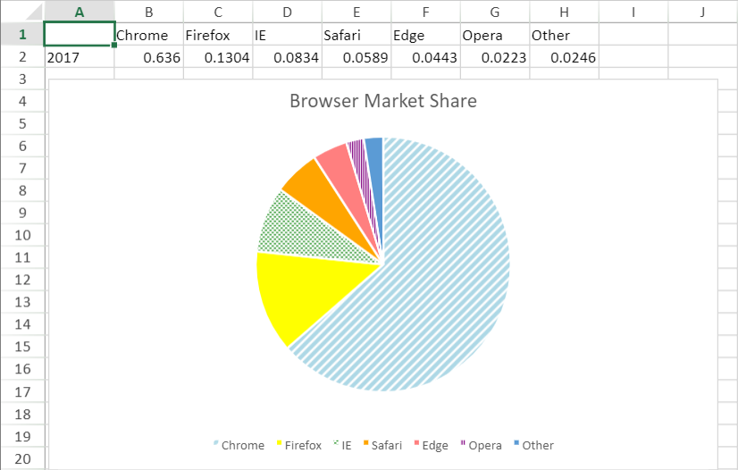
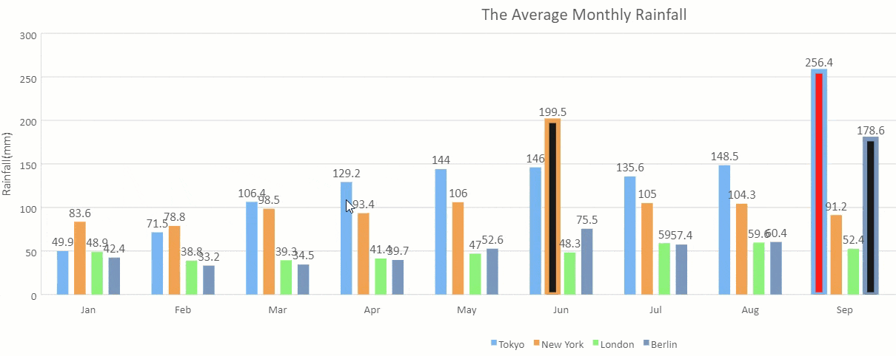

A data point is a piece of data in a chart that shows the value of the contents of one cell in the linked data range. You can set special styles for some special meaningful data points to make data presentation more focused and charts more intuitive and efficient.
SpreadJS provides the option to customize a chart’s series data point style based on different chart types. You can use the GC.Spread.Sheets.Charts.IDataPointStyle interface to define all the properties.

The indexes of data points in different series are counted from 0 and are arranged from top to bottom and from left to right.
The properties available for different types of charts are listed in the table below:
| Chart Types | Properties |
|---|---|
|
Column Pie / Doughnut Bar Treemap Sunburst Funnel Combo |
backColor backColorTransparency border.color border.transparency border.width border.lineType |
Note: Area and filled radar charts do not support data points, so the data point API will not work for them.
The backColor and backColorTransparency property for sunburst and treemap chart can be set in old data point style structure as well.
The following code sample shows how to apply different background colors to each data point in a pie chart.
| JavaScript |
Copy Code
|
|---|---|
// Configure Workbook and Worksheet var spread = new GC.Spread.Sheets.Workbook("ss",{ sheetCount: 4 }); var activeSheet = spread.getActiveSheet(); // Set Chart Data var pieData = [ ["", 'Chrome', 'Firefox', 'IE', 'Safari', 'Edge', 'Opera', 'Other'], ["2017", 0.6360, 0.1304, 0.0834, 0.0589, 0.0443, 0.0223, 0.0246] ]; spread.sheets[1].setArray(0, 0, pieData); var dataRange = new GC.Spread.Sheets.Range(0, 0, 2, 8); // Create Pie Chart var pieChart = spread.sheets[1].charts.add('Pie Chart', GC.Spread.Sheets.Charts.ChartType.pie, 2, 50, 600, 350, "A1:H2"); pieChart.title({ text: "Browser Market Share" }); var pieStyle = pieChart.series().get(0); // Customize Data Point Styles pieStyle.dataPoints = { 0: { backColor: { type: GC.Spread.Sheets.Charts.PatternType.wideUpwardDiagonal, foregroundColor: "white", backgroundColor: "LightBlue", }, backColorTransparency: 0.1, }, 1: { backColor: "Yellow", }, 2: { backColor: { type: GC.Spread.Sheets.Charts.PatternType.trellis, foregroundColor: "white", backgroundColor: "Green", } }, 3: { backColor: "Orange", }, 4: { backColor: "Red", backColorTransparency: 0.5, }, 5: { backColor: { type: GC.Spread.Sheets.Charts.PatternType.narrowVertical, foregroundColor: "white", backgroundColor: "Purple", } }, }; pieChart.series().set(0, pieStyle); |
|
When you select a data point in a chart series, the whole series is selected. Select the data point again to specifically customize that data point in the chart series.
Selecting a data point in another series in the same chart reselects the whole series.
